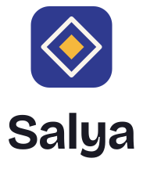

1Notre marque
Mission. Permettre à une entreprise d’Afrique de l’Ouest de faire sa paie et de gérer ses équipes en français, en FCFA, sans consultant pour démarrer.
Promesse. Première paie dans la journée pour une petite équipe, un mois d’essai offert, reprise assistée de vos fichiers existants.
Public. Responsables RH et paie, comptables et cabinets, dirigeants de PME. Mobile d’abord, WhatsApp et mobile money au quotidien.
Personnalité
| Nous sommes | Nous ne sommes pas |
|---|---|
| Fiables. Chaque étape est tracée, chaque chiffre vérifiable. | Alarmistes ou « magiques ». Pas de promesse sans preuve. |
| Clairs. Des phrases courtes, des mots du métier. | Jargonneux. Pas d’anglicismes inutiles. |
| Chaleureux. On parle à une personne, avec le vouvoiement. | Familiers. Pas d’argot ni de blagues dans les écrans. |
| Précis. Des montants exacts, des dates, des noms de statuts. | Vagues. Pas de « solution globale », pas de superlatifs. |
| Posés. Le calme d’un outil qui ne se trompe pas. | Tape-à-l’œil. Pas d’exclamations ni d’animations gratuites. |
Ton de voix
| Juste | À éviter |
|---|---|
| « Votre paie de novembre est prête à être approuvée. » | « Boostez votre paie avec notre solution innovante ! » |
| « Une ligne est à corriger : la date d’embauche manque. » | « Oups, quelque chose s’est mal passé. » |
| « Un mois d’essai offert, avec reprise de vos fichiers. » | « Une expérience de paie sans couture. » |
Vocabulaire
À privilégier : paie, bulletin, salarié, période, approuver, régler, reprise, essai, piste d’audit, FCFA. À éviter : révolutionnaire, solution globale, sans effort, puissant, next-gen, « seamless ».
2Logo
Le symbole est un carré arrondi bazin, un losange sable en trait et un losange mangue au centre. Le mot « Salya » est composé en Bricolage Grotesque 700, interlettrage resserré, converti en tracés dans les fichiers : aucune police à installer. Le logo ne contient pas de latérite : cette couleur est réservée aux boutons.
Principal, sur Sable ou blanc.salya_logo_principal.svg
Inversé, sur Nuit. Le carré passe en sable pour garder le contraste.salya_logo_inverse_nuit.svg
Monochrome, un seul encrage (tampon, impression noir).salya_logo_monochrome.svg

Vertical, pour les formats carrés et étroits.salya_logo_vertical.svg
Symbole seul et icône 32 px (favicon, icône d’application, photo de profil WhatsApp).salya_symbole.svg, salya_favicon.svg
Sous-marque Liggeey. Même carré, losange central sable, nom en Bricolage 700 et mention « un module Salya ». Les modules suivants suivent ce gabarit.liggeey_logo_module.svg
Zone de protection et taille minimale
Laisser autour du logo un vide égal à la hauteur du losange central (soit un quart de la hauteur du symbole). Taille minimale : symbole seul 16 px (4 mm) ; logo horizontal 24 px de haut (8 mm en impression). En dessous, utiliser le symbole seul.
Usages interdits
- Ajouter du latérite, du violet ou un dégradé au logo.
- Étirer, pencher ou faire pivoter le symbole.
- Changer la police du mot « Salya » ou séparer ses lettres.
- Placer le logo sur un fond sans contraste (par exemple le principal sur du bazin).
- Ajouter ombre, contour, lueur ou effet 3D.
- Recréer le logo à la main : toujours utiliser les fichiers SVG fournis.
3Couleurs
L’interface reste à 90 ou 95 % neutre (sable, encre, brume). La couleur vient du bazin et de quelques accents. Répartition indicative : 60 % sable, 25 % encre, 10 % bazin, 5 % accents.
#2F3A8F · RGB 47 58 143
Marque, liens, tableaux, en-têtes.
#161A3A · RGB 22 26 58
Fonds sombres, pied de page. Variante profonde #0F1230.
#C8441F · RGB 200 68 31
Boutons principaux uniquement, texte blanc. Jamais en petit texte.
#F5B83D · RGB 245 184 61
Accent : cœur du symbole, mise en avant sur fond sombre. Jamais en texte sur fond clair.
#1F7A5C · RGB 31 122 92
Validation, état réussi.
#FAF5EC · RGB 250 245 236
Fond principal. Variante #F1EADC pour les panneaux.
#1A1A24 · RGB 26 26 36
Texte principal.
#4A4A5A · RGB 74 74 90
Texte secondaire, étiquettes.
#E7DFD0 · RGB 231 223 208
Traits, bordures, fonds neutres.
Contrastes vérifiés (norme WCAG AA : 4,5 pour le texte)
| Association | Ratio | Usage |
|---|---|---|
| Encre sur Sable | 15,9 | Texte courant |
| Ardoise sur Sable | 8,0 | Texte secondaire |
| Bazin sur Sable | 9,1 | Titres, liens |
| Sable sur Bazin | 9,1 | En-têtes de tableaux |
| Blanc sur Latérite | 4,9 | Boutons principaux (texte 16 px ou plus) |
| Encre sur Mangue | 9,7 | Pastilles d’accent |
| Baobab sur Sable | 4,8 | Texte de validation |
| Sable sur Nuit · Mangue sur Nuit | 15,6 · 9,5 | Fonds sombres |
| Latérite sur Sable | 4,5 | Limite : ne pas l’employer en texte |
| Mangue sur Sable | 1,6 | Interdit en texte ou en trait |
Statuts
En attente En cours Validé
Sept statuts de paie, dans l’ordre : Brouillon, Calculée, En revue, Approuvée, Validée, Payée, Clôturée.
4Typographie
Titres : Bricolage Grotesque (graisses 500 et 700). Texte : Figtree (400 et 500, 600 pour les boutons). Chiffres et références : DM Mono. Polices gratuites, licence SIL OFL (Google Fonts). Dans les montants, utiliser les chiffres tabulaires pour aligner les colonnes.
| Niveau | Écran (px) | Word (pt) | Police |
|---|---|---|---|
| Titre 1 | 72 sur bureau, 38 sur mobile | 26 | Bricolage 700 |
| Titre 2 | 48 · 30 | 18 | Bricolage 700 |
| Titre 3 | 28 · 24 | 14 | Bricolage 700 |
| Chapeau | 20 | 12 | Figtree 400 |
| Texte | 16 / 26 | 10,5 | Figtree 400 |
| Légende, étiquette | 13 à 14 | 9 | Figtree 500 |
| Montants, références | 14 à 16 | 10 | DM Mono 500 |
Règles : lignes de 62 caractères au plus, phrases en casse normale, pas de capitales espacées, aucun texte sous 13 px. Documents Word : si Bricolage Grotesque et Figtree ne sont pas installées, le repli est Calibri (titres et texte), puis Arial.
5Motif treillis bazin
Fines diagonales croisées à 45°, trait de 1 px, couleur bazin à 14 % d’opacité, motif répétable de 32 px (logos/motif_treillis_bazin.svg). Sur fond sombre, remplacer le bazin par le sable à 7 %.
Autorisé : fond de page d’accueil et de bandeaux, fond de couverture de document, fond d’une section d’essai. Interdit : derrière du texte courant, sur un tableau, en couleur vive.
6Icônes et visuels
Icônes : trait de 1,8 px, bouts arrondis, 24 px, une seule couleur (encre ou bazin). Les logos de produits tiers (WhatsApp, Excel, Google Drive) gardent leurs couleurs officielles et ne sont jamais redessinés.
Captures et interfaces : données toujours fictives et signalées, noms de salariés d’exemple (Awa Ndiaye, Moussa Sow, Fatou Diop, Ibrahima Fall, Mariama Ba, Cheikh Gueye), montants en FCFA.
Photos : réelles, lumière naturelle, bureaux, ateliers et commerces d’Afrique de l’Ouest, sans visage identifiable, sans effet banque d’images. Aucune illustration générique de personnes.
7Interface
Bouton principal Bouton secondaire
- Un seul bouton principal (latérite, texte blanc) par écran. Hauteur 44 px, texte 16 px.
- Rayons : petit 8 px (champs), moyen 12 px (boutons, panneaux), grand 20 px (cartes).
- Espacements : 4, 8, 12, 16, 24, 32, 48, 64, 96, 128 px, et aucune autre valeur.
- Champs de 48 px de haut, libellé visible au-dessus, message d’erreur sous le champ, qui dit quoi écrire.
- Focus visible : anneau de 2 px de la couleur d’action, jamais supprimé.
- Tableaux : en-tête sable clair, lignes séparées par un trait brume, montants alignés à droite en chiffres tabulaires.
8Mouvement
Sobre et utile : survol d’un bouton 150 ms, changements d’état 250 ms, entrée de la page d’accueil 450 ms, une fois. Aucune carte n’apparaît au défilement. Quand le visiteur demande de réduire les animations, tout reste immobile et visible. Une animation qui dure plus de 5 secondes a un bouton pause.
9Applications
Signature d’e-mail
[Prénom Nom] [Fonction] · Salya WhatsApp : [numéro WhatsApp] [adresse e-mail] Logo : salya_logo_principal (hauteur 40 px), police Figtree ou Arial 14 px
WhatsApp et réseaux sociaux
Photo de profil : le symbole seul, sur fond bazin, carré de 640 × 640 px, avec le symbole occupant 60 % de la largeur. Bannière LinkedIn : fond Nuit avec le motif treillis à 7 % de sable, logo inversé à gauche, une phrase de promesse à droite.
Documents
Papier A4, marges de 2 cm, logo en haut à gauche, pied de page avec les mentions légales de l’entreprise et la numérotation. Mêmes polices que le texte courant (repli Calibri). Les modèles Word suivent cette charte.
Carte de visite et présentation
Carte 85 × 55 mm : recto fond sable avec le logo, verso fond Nuit avec le treillis. Présentation : fond sable pour le contenu, fond Nuit pour la couverture et les titres de chapitre.
10Jetons de design
Fichiers : tokens.css et salya-tokens.json. Extrait :
:root {
--salya-bazin: #2F3A8F; --salya-nuit: #161A3A;
--salya-laterite: #C8441F; --salya-mangue: #F5B83D;
--salya-baobab: #1F7A5C; --salya-sable: #FAF5EC;
--salya-encre: #1A1A24; --salya-ardoise: #4A4A5A;
--salya-brume: #E7DFD0;
--salya-font-titres: "Bricolage Grotesque", Calibri, sans-serif;
--salya-font-texte: "Figtree", Calibri, sans-serif;
--salya-r-petit: 8px; --salya-r-moyen: 12px; --salya-r-grand: 20px;
}
À validerPoints en attente du propriétaire
- Nom et marque : « Salya » et « Liggeey » n’ont pas été vérifiés (antériorité OAPI, INPI, noms de domaine).
- Raison sociale, NINEA, RCCM, adresse, e-mail, numéro WhatsApp : non communiqués, remplacés par des marqueurs entre crochets dans les documents.
- Prix et TVA : à fixer.
- Conformité sociale et fiscale (IPRES, CSS, impôts) : aucune affirmation tant que le contenu n’est pas validé.
- Polices : vérifier la licence d’usage pour l’impression si une imprimerie les intègre.